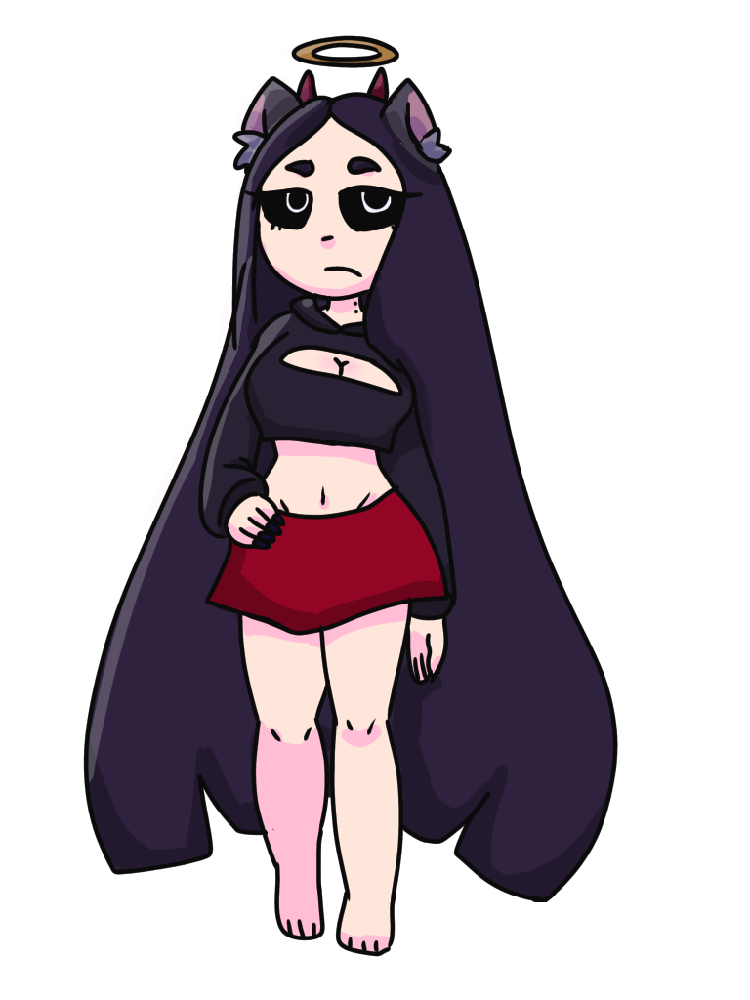

Ebony's Information
Name: Ebony Dark'ness Dementia Raven Way(aka Ebony)
Gender: female
Species: vamipre, werewolf, angel, demon
Age: 178 years old
Bio: she was born half angel(mom side) half demon(dad side)
and wsa turned into a vampire after being bit ate age 17 and was turned
into a werewolf as well at the age of 19
Personality: very nice to everyone unless tthey get in her
way 😠 , very funny
Appearance: 4'6", skinny, [REDACTED], very pale, childlike,
long straight dark hair, pitch black eyes that change color depending on her mood
Talents/Skills: she can seduce anyone she wants, she also has
the ability to teleport and turn invisable
Strengths: she doesnt get mad very easily, can cook and clean,
gets stronger when listening to nightcore
Weaknesses: anger problems, doesn't like colorful things
Dating: not interested
Ebony
Hamilton's Information
Name: Hamilton The Wihtikow
Gender: Male
Species: ??? (It’s just called a Wihtikow, but nobody
knows what it really is. So the town just called it a Wihtikow.)
Age: 152
Bio: “The terror of the forest, the Wihtikow, a enigmatic
creature of unknown origin. It wanders forests in search of… who know what,
but the most important thing is that it must be slain! Hamilton, as we
named it, is a menace to the humble town of Woodhage! It shall be put
down by the guns and blades of the victims it terrorized day and night!”-
Mayor Bernard of Woodhage.
Personality: “Uh… it uhm… it likes to cause trouble we
guess? And… oh! It loves to eat anything that lives or moves! Even eats
trees and water! Or at least tries to eat water.”- Henry
Appearance: “Well… how do I even start to describe this.
The reports are mixed, but here’s what I can gather; it is a feral boar,
mammoth, moose, bear, elk, beaver, badger, ape thing. Sounds weird
doesn’t it? That’s why we called it a Wihtikow.”- Johnny
Talents/Skills: “No matter how many spears, arrows,
bullets, and dynamite we throw at it… it never seems to die! We’ve seen
it bleed, but it’s never gone down! Best we’ve done is make it leave us
alone for a bit! And that’s not to mention it’s immense strength! It
flipped the Greenman family’s whole coach 100 feet in the air!” - Margie
Strengths: “It loves the night… and winter… and oh boy
does it love the cold, nearly killed me on a hunting trip after a
blizzard!” - Robby
Weaknesses: “THE FIRE, THE LIGHT!!! IT KEEPS THE
WIHTIKOW AWAY!!!” - Angus
dating: “I swear that things trying to mate with my
cattle! Oh, but I won’t let it! I keep one eye open every night with
a shotgun under my pillow. So when it comes… I’ll be waiting for it!”
- Gary